투혼 MTS 도움말
옵션월물별 정보
옵션 만기 구조를
간단하게,
월물별로 보기 좋게!
월물별 가격·변동·미결제약정 등
핵심 지표를 한 화면에서 비교해
어떤 월물이 더 활발한지,
투자 기회가 어디에 있는지
빠르게 파악할 수 있는 기능이에요.
옵션월물별 정보
옵션전광판에서는 콜·풋 옵션의 현재가, 행사가,
등락률을 한눈에 비교할 수 있어요.
월물과 콜/풋 포지션을 전환하며 시세 흐름과
변동성을 빠르게 파악할 수 있는 화면이에요.
- 트레이딩
- 국내선물/옵션
- 시세/투자정보
- 옵션월물별 정보
화면소개-주간/야간
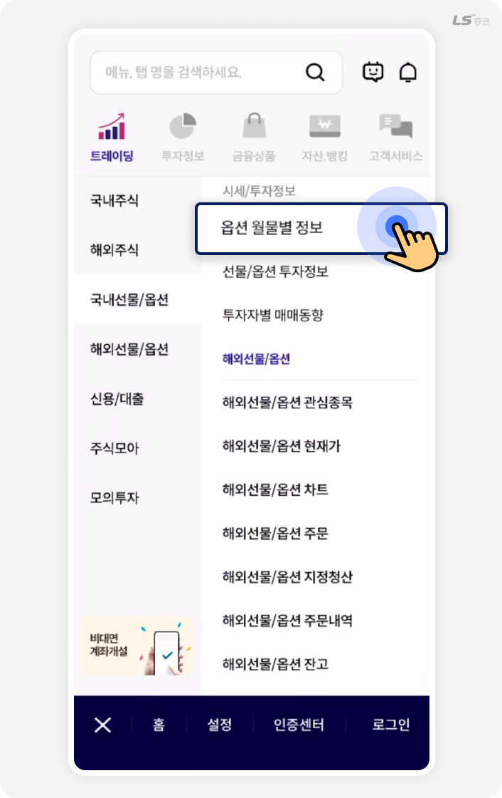
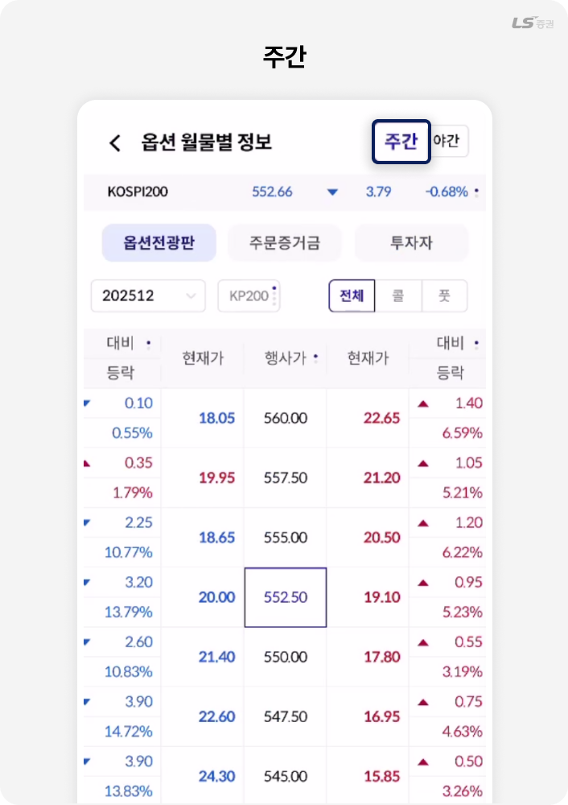
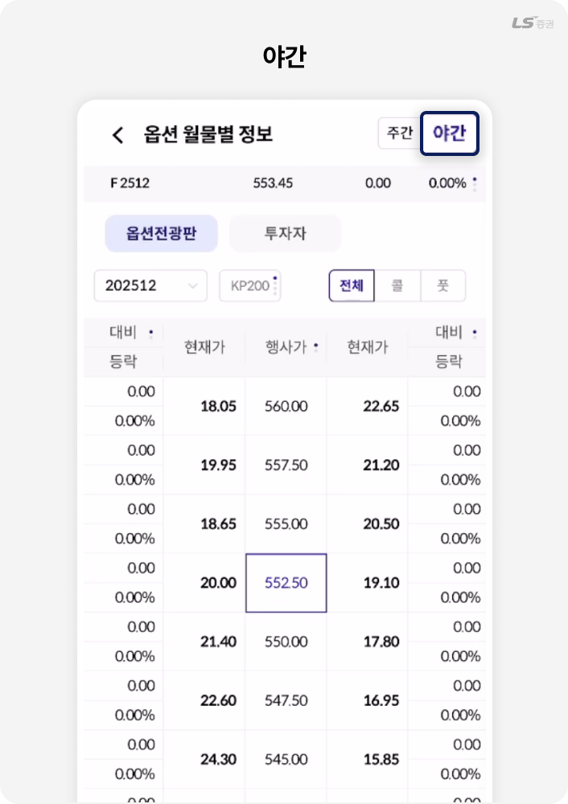
‘주간/야간’ 버튼은 거래 시간이 달라질 때 옵션 시세와 수급 정보를 즉시 전환해 보여주는 기능이에요.
장 운영 시간에 맞춰 필요한 화면을 빠르게 확인할 수 있어요.
화면소개-선물/KOSPI200 정보 토글
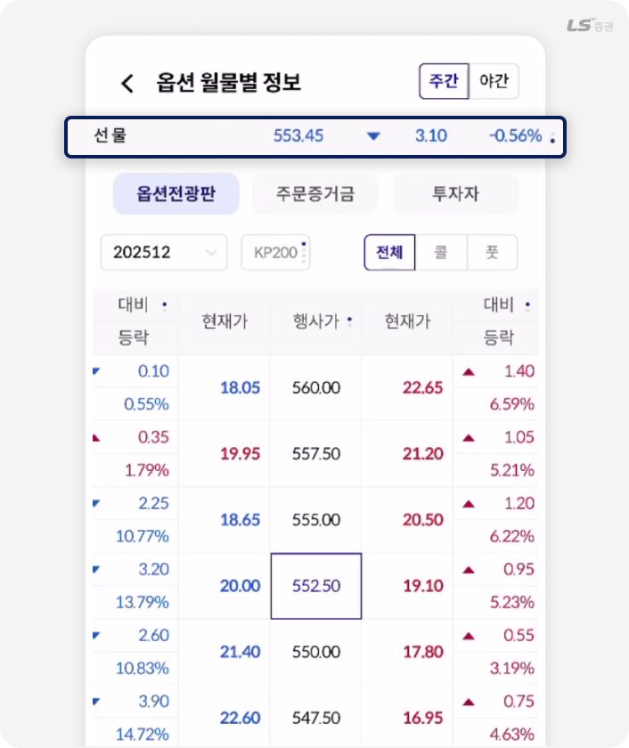
‘선물/KOSPI200 정보 토글’은 현재 선택한 지수의 현재가·등락·변동률을 한눈에 보여주는 영역이에요.
시장의 방향성을 빠르게 파악할 수 있으며, 특히 만기일에는 KOSPI200 지수를 신속하게 확인할 수 있어 옵션 거래에 앞서 지수 흐름을 먼저 확인하는 용도로도 활용해요.
TIP!
상단티커를 누르면 ‘선물 ↔ KOSPI200’으로 전환돼요.
화면소개- 월물 선택
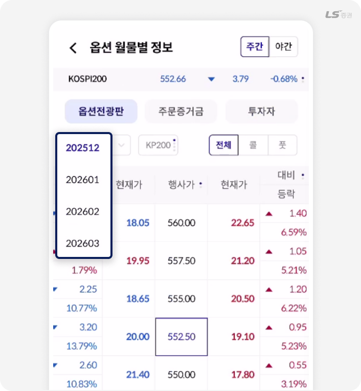
‘월물 버튼’은 원하는 옵션의 만기월을 선택해 각 월물별 시세와 흐름을 바로 확인할 수 있는 기능이에요.
기본으로는 근월물이 자동 표시되어 빠르게 조회할 수 있어요.
TIP!
옵션 전광판에서 월물 선택 시 기본적으로 가장 만기가 가까운 상품인 근월물을 먼저 조회해요.
화면소개-지수유형
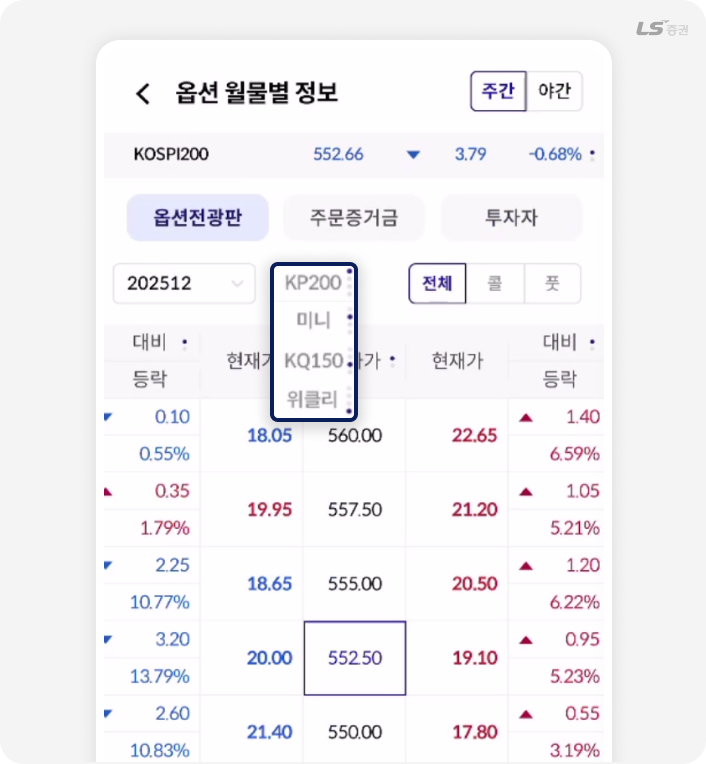
‘지수유형’은 KP200·미니·KQ150·위클리 등 옵션의 기준이 되는 지수를 선택할 수 있어요.
원하는 지수로 전환하면 해당 지수 기반의 월물·현재가·행사가 정보만 필터링되어 자신이 거래하려는 상품 흐름을 더 정확하게 확인할 수 있어요.
화면소개-옵션 종류
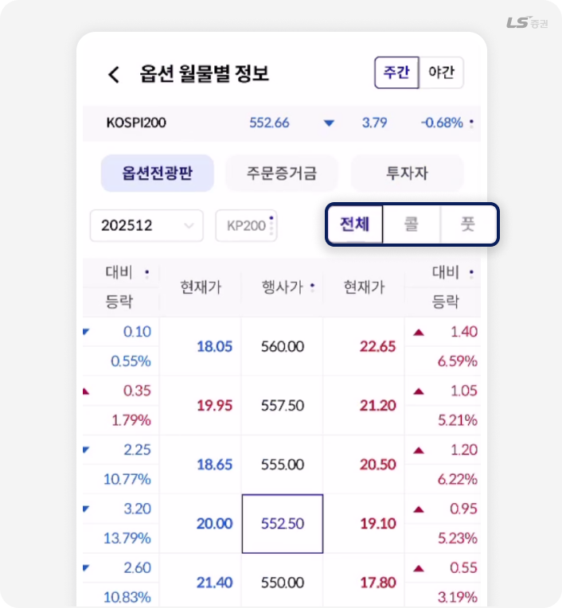
‘전체/콜/풋’ 버튼은 옵션 데이터를 종류별로 빠르게 나눠 보는 기능이에요.
전체를 보면 전체 행사가의 가격 흐름을 한눈에 파악할 수 있고, 콜·풋 버튼 선택 시 대비, 등락, 고가, 저가, 미결제 정보를 집중적으로 살펴볼 수 있어요.
화면소개-현재가 주문
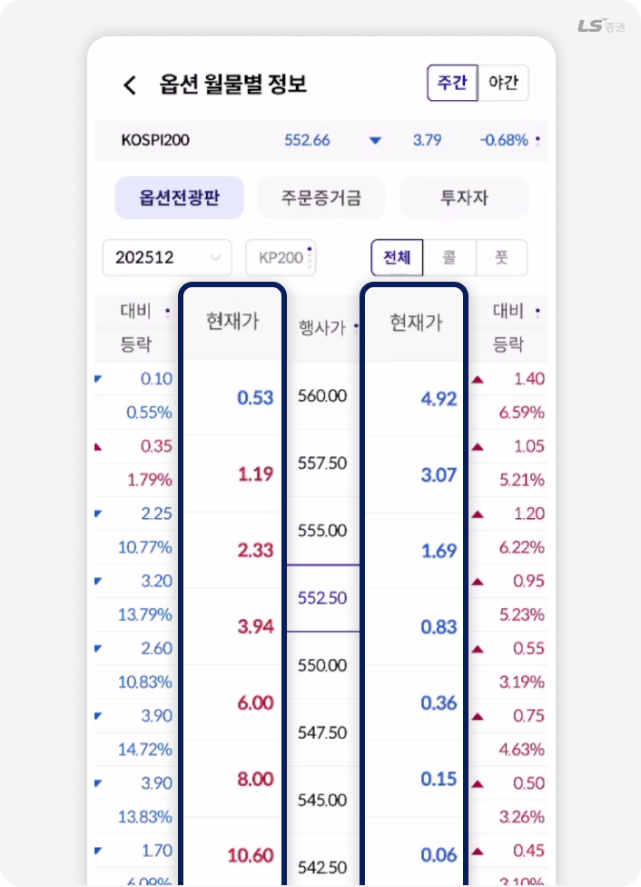
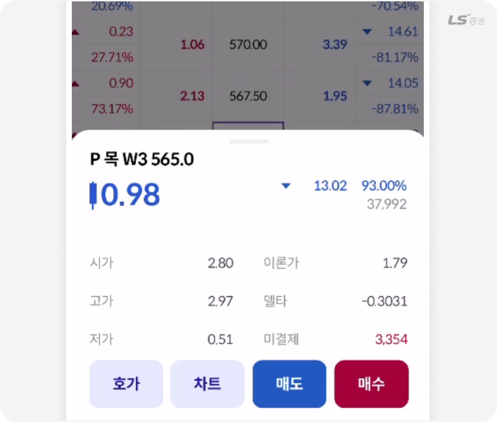
옵션 월물 리스트에서 ‘현재가’ 를 누르면, 선택한 종목의 빠른 매수·매도 주문창이 즉시 하단에 펼쳐지는 기능이에요.
가격·등락률·체결 강도 등 핵심 정보를 한 화면에서 확인한 뒤, 원클릭으로 바로 주문을 이어갈 수 있어 빠르게 대응해야 하는 옵션 시장에서 특히 유용해요.
화면소개- 주문증거금 / 투자자
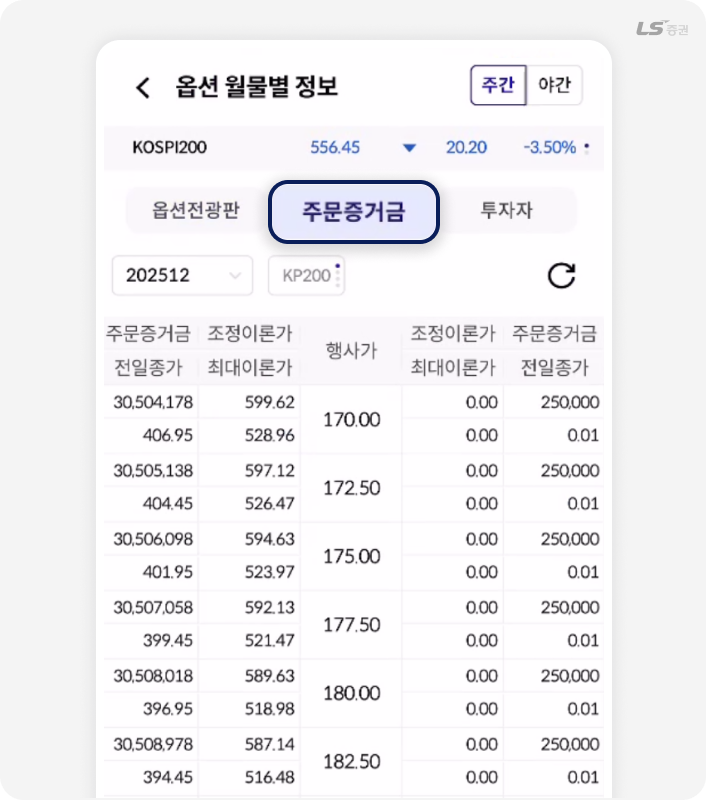
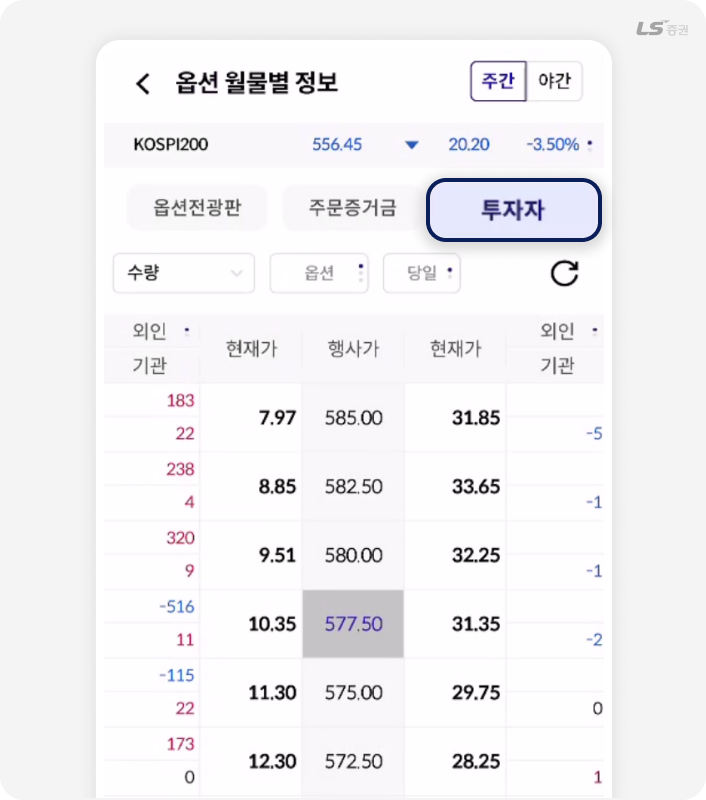
‘주문증거금 / 투자자’ 화면은 옵션 거래에 필요한 기본 정보를 빠르게 확인할 수 있는 영역이에요.
주문증거금 탭에서는 종목별 필요증거금과 유지증거금을 확인해 실제 주문 가능 증거금을 계산할 수 있고, 투자자 탭에서는 개인·외국인·기관의 순매매 현황을 비교해 시장의 매매 주체 흐름을 파악할 수 있어요.